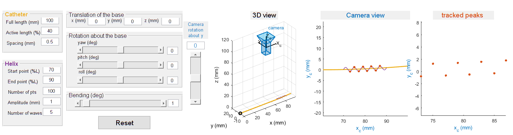

Contents
function varargout = catheter_7dof(varargin) % CATHETER_7DOF MATLAB code for catheter_7dof.fig % CATHETER_7DOF, by itself, creates a new CATHETER_7DOF or raises the existing % singleton*. % % H = CATHETER_7DOF returns the handle to a new CATHETER_7DOF or the handle to % the existing singleton*. % % CATHETER_7DOF('CALLBACK',hObject,eventData,handles,...) calls the local % function named CALLBACK in CATHETER_7DOF.M with the given input arguments. % % CATHETER_7DOF('Property','Value',...) creates a new CATHETER_7DOF or raises the % existing singleton*. Starting from the left, property value pairs are % applied to the GUI before catheter_7dof_OpeningFcn gets called. An % unrecognized property name or invalid value makes property application % stop. All inputs are passed to catheter_7dof_OpeningFcn via varargin. % % *See GUI Options on GUIDE's Tools menu. Choose "GUI allows only one % instance to run (singleton)". % % See also: GUIDE, GUIDATA, GUIHANDLES % Edit the above text to modify the response to help catheter_7dof % Last Modified by GUIDE v2.5 09-Oct-2018 15:58:36 % Begin initialization code - DO NOT EDIT gui_Singleton = 1; gui_State = struct('gui_Name', mfilename, ... 'gui_Singleton', gui_Singleton, ... 'gui_OpeningFcn', @catheter_7dof_OpeningFcn, ... 'gui_OutputFcn', @catheter_7dof_OutputFcn, ... 'gui_LayoutFcn', [] , ... 'gui_Callback', []); if nargin && ischar(varargin{1}) gui_State.gui_Callback = str2func(varargin{1}); end if nargout [varargout{1:nargout}] = gui_mainfcn(gui_State, varargin{:}); else gui_mainfcn(gui_State, varargin{:}); end % End initialization code - DO NOT EDIT % --- Executes just before catheter_7dof is made visible. function catheter_7dof_OpeningFcn(hObject, eventdata, handles, varargin)
% This function has no output args, see OutputFcn. % hObject handle to figure % eventdata reserved - to be defined in a future version of MATLAB % handles structure with handles and user data (see GUIDATA) % varargin command line arguments to catheter_7dof (see VARARGIN) % Choose default command line output for catheter_7dof handles.output = hObject; % Update handles structure guidata(hObject, handles);
get default parameters
% % % global initialValues; % % % % % % initialValues = [ % % % str2double(get(handles.edit_L,'String')); % length of catheter (mm) % % % str2double(get(handles.edit_L_act,'String')); % active length (%) % % % str2double(get(handles.edit_L_res,'String')); % number of nodes along catheter length % % % % % % str2double(get(handles.edit_h_1,'String')); % helix starting point (% length) % % % str2double(get(handles.edit_h_2,'String')); % helix ending point (% length) % % % str2double(get(handles.edit_h_n,'String')); % number of points of the helix % % % str2double(get(handles.edit_h_a,'String')); % amplitude of the sine wave of the helix (mm) % % % str2double(get(handles.edit_h_w,'String')); % number of sinusoids of the helix % % % % % % str2double(get(handles.edit_x,'String')); % base x-translation % % % str2double(get(handles.edit_y,'String')); % base y-translation % % % str2double(get(handles.edit_z,'String')); % base z-translation % % % % % % get(handles.slider_roll, 'Value')*pi/180; % roll (degree) % % % get(handles.slider_yaw, 'Value')*pi/180; % yaw (degree) % % % get(handles.slider_pitch, 'Value')*pi/180; % pitch (degree) % % % get(handles.slider_bend, 'Value')*pi/180; % bending (degree) % % % ];
initial plot
configure_catheter_and_plot(hObject, eventdata, handles); %%%%%%%% regenerate plot %%%%%%%% % UIWAIT makes catheter_7dof wait for user response (see UIRESUME) % uiwait(handles.figure1); % --- Outputs from this function are returned to the command line.
function varargout = catheter_7dof_OutputFcn(hObject, eventdata, handles) % varargout cell array for returning output args (see VARARGOUT); % hObject handle to figure % eventdata reserved - to be defined in a future version of MATLAB % handles structure with handles and user data (see GUIDATA) % Get default command line output from handles structure varargout{1} = handles.output; function edit_L_Callback(hObject, eventdata, handles) % hObject handle to edit_L (see GCBO) % eventdata reserved - to be defined in a future version of MATLAB % handles structure with handles and user data (see GUIDATA) % Hints: get(hObject,'String') returns contents of edit_L as text % str2double(get(hObject,'String')) returns contents of edit_L as a double configure_catheter_and_plot(hObject, eventdata, handles); %%%%%%%% regenerate plot %%%%%%%% % --- Executes during object creation, after setting all properties. function edit_L_CreateFcn(hObject, eventdata, handles) % hObject handle to edit_L (see GCBO) % eventdata reserved - to be defined in a future version of MATLAB % handles empty - handles not created until after all CreateFcns called % Hint: edit controls usually have a white background on Windows. % See ISPC and COMPUTER. if ispc && isequal(get(hObject,'BackgroundColor'), get(0,'defaultUicontrolBackgroundColor')) set(hObject,'BackgroundColor','white'); end function edit_L_act_Callback(hObject, eventdata, handles) % hObject handle to edit_L_act (see GCBO) % eventdata reserved - to be defined in a future version of MATLAB % handles structure with handles and user data (see GUIDATA) % Hints: get(hObject,'String') returns contents of edit_L_act as text % str2double(get(hObject,'String')) returns contents of edit_L_act as a double configure_catheter_and_plot(hObject, eventdata, handles); %%%%%%%% regenerate plot %%%%%%%% % --- Executes during object creation, after setting all properties. function edit_L_act_CreateFcn(hObject, eventdata, handles) % hObject handle to edit_L_act (see GCBO) % eventdata reserved - to be defined in a future version of MATLAB % handles empty - handles not created until after all CreateFcns called % Hint: edit controls usually have a white background on Windows. % See ISPC and COMPUTER. if ispc && isequal(get(hObject,'BackgroundColor'), get(0,'defaultUicontrolBackgroundColor')) set(hObject,'BackgroundColor','white'); end function edit_L_res_Callback(hObject, eventdata, handles) % hObject handle to edit_L_res (see GCBO) % eventdata reserved - to be defined in a future version of MATLAB % handles structure with handles and user data (see GUIDATA) % Hints: get(hObject,'String') returns contents of edit_L_res as text % str2double(get(hObject,'String')) returns contents of edit_L_res as a double configure_catheter_and_plot(hObject, eventdata, handles); %%%%%%%% regenerate plot %%%%%%%% % --- Executes during object creation, after setting all properties. function edit_L_res_CreateFcn(hObject, eventdata, handles) % hObject handle to edit_L_res (see GCBO) % eventdata reserved - to be defined in a future version of MATLAB % handles empty - handles not created until after all CreateFcns called % Hint: edit controls usually have a white background on Windows. % See ISPC and COMPUTER. if ispc && isequal(get(hObject,'BackgroundColor'), get(0,'defaultUicontrolBackgroundColor')) set(hObject,'BackgroundColor','white'); end function edit_h_1_Callback(hObject, eventdata, handles) % hObject handle to edit_L_res (see GCBO) % eventdata reserved - to be defined in a future version of MATLAB % handles structure with handles and user data (see GUIDATA) % Hints: get(hObject,'String') returns contents of edit_L_res as text % str2double(get(hObject,'String')) returns contents of edit_L_res as a double configure_catheter_and_plot(hObject, eventdata, handles); %%%%%%%% regenerate plot %%%%%%%% % --- Executes during object creation, after setting all properties. function edit_h_1_CreateFcn(hObject, eventdata, handles) % hObject handle to edit_L_res (see GCBO) % eventdata reserved - to be defined in a future version of MATLAB % handles empty - handles not created until after all CreateFcns called % Hint: edit controls usually have a white background on Windows. % See ISPC and COMPUTER. if ispc && isequal(get(hObject,'BackgroundColor'), get(0,'defaultUicontrolBackgroundColor')) set(hObject,'BackgroundColor','white'); end function edit_h_2_Callback(hObject, eventdata, handles) % hObject handle to edit_L_res (see GCBO) % eventdata reserved - to be defined in a future version of MATLAB % handles structure with handles and user data (see GUIDATA) % Hints: get(hObject,'String') returns contents of edit_L_res as text % str2double(get(hObject,'String')) returns contents of edit_L_res as a double configure_catheter_and_plot(hObject, eventdata, handles); %%%%%%%% regenerate plot %%%%%%%% % --- Executes during object creation, after setting all properties. function edit_h_2_CreateFcn(hObject, eventdata, handles) % hObject handle to edit_L_res (see GCBO) % eventdata reserved - to be defined in a future version of MATLAB % handles empty - handles not created until after all CreateFcns called % Hint: edit controls usually have a white background on Windows. % See ISPC and COMPUTER. if ispc && isequal(get(hObject,'BackgroundColor'), get(0,'defaultUicontrolBackgroundColor')) set(hObject,'BackgroundColor','white'); end function edit_h_n_Callback(hObject, eventdata, handles) % hObject handle to edit_h_n (see GCBO) % eventdata reserved - to be defined in a future version of MATLAB % handles structure with handles and user data (see GUIDATA) % Hints: get(hObject,'String') returns contents of edit_h_n as text % str2double(get(hObject,'String')) returns contents of edit_h_n as a double configure_catheter_and_plot(hObject, eventdata, handles); %%%%%%%% regenerate plot %%%%%%%% % --- Executes during object creation, after setting all properties. function edit_h_n_CreateFcn(hObject, eventdata, handles) % hObject handle to edit_h_n (see GCBO) % eventdata reserved - to be defined in a future version of MATLAB % handles empty - handles not created until after all CreateFcns called % Hint: edit controls usually have a white background on Windows. % See ISPC and COMPUTER. if ispc && isequal(get(hObject,'BackgroundColor'), get(0,'defaultUicontrolBackgroundColor')) set(hObject,'BackgroundColor','white'); end function edit_h_a_Callback(hObject, eventdata, handles) % hObject handle to edit_h_a (see GCBO) % eventdata reserved - to be defined in a future version of MATLAB % handles structure with handles and user data (see GUIDATA) % Hints: get(hObject,'String') returns contents of edit_h_a as text % str2double(get(hObject,'String')) returns contents of edit_h_a as a double configure_catheter_and_plot(hObject, eventdata, handles); %%%%%%%% regenerate plot %%%%%%%% % --- Executes during object creation, after setting all properties. function edit_h_a_CreateFcn(hObject, eventdata, handles) % hObject handle to edit_h_a (see GCBO) % eventdata reserved - to be defined in a future version of MATLAB % handles empty - handles not created until after all CreateFcns called % Hint: edit controls usually have a white background on Windows. % See ISPC and COMPUTER. if ispc && isequal(get(hObject,'BackgroundColor'), get(0,'defaultUicontrolBackgroundColor')) set(hObject,'BackgroundColor','white'); end function edit_h_w_Callback(hObject, eventdata, handles) % hObject handle to edit_h_w (see GCBO) % eventdata reserved - to be defined in a future version of MATLAB % handles structure with handles and user data (see GUIDATA) % Hints: get(hObject,'String') returns contents of edit_h_w as text % str2double(get(hObject,'String')) returns contents of edit_h_w as a double configure_catheter_and_plot(hObject, eventdata, handles); %%%%%%%% regenerate plot %%%%%%%% % --- Executes during object creation, after setting all properties. function edit_h_w_CreateFcn(hObject, eventdata, handles) % hObject handle to edit_h_w (see GCBO) % eventdata reserved - to be defined in a future version of MATLAB % handles empty - handles not created until after all CreateFcns called % Hint: edit controls usually have a white background on Windows. % See ISPC and COMPUTER. if ispc && isequal(get(hObject,'BackgroundColor'), get(0,'defaultUicontrolBackgroundColor')) set(hObject,'BackgroundColor','white'); end function edit_x_Callback(hObject, eventdata, handles) % hObject handle to edit_x (see GCBO) % eventdata reserved - to be defined in a future version of MATLAB % handles structure with handles and user data (see GUIDATA) % Hints: get(hObject,'String') returns contents of edit_x as text % str2double(get(hObject,'String')) returns contents of edit_x as a double configure_catheter_and_plot(hObject, eventdata, handles); %%%%%%%% regenerate plot %%%%%%%% % --- Executes during object creation, after setting all properties. function edit_x_CreateFcn(hObject, eventdata, handles) % hObject handle to edit_x (see GCBO) % eventdata reserved - to be defined in a future version of MATLAB % handles empty - handles not created until after all CreateFcns called % Hint: edit controls usually have a white background on Windows. % See ISPC and COMPUTER. if ispc && isequal(get(hObject,'BackgroundColor'), get(0,'defaultUicontrolBackgroundColor')) set(hObject,'BackgroundColor','white'); end function edit_y_Callback(hObject, eventdata, handles) % hObject handle to edit_y (see GCBO) % eventdata reserved - to be defined in a future version of MATLAB % handles structure with handles and user data (see GUIDATA) % Hints: get(hObject,'String') returns contents of edit_y as text % str2double(get(hObject,'String')) returns contents of edit_y as a double configure_catheter_and_plot(hObject, eventdata, handles); %%%%%%%% regenerate plot %%%%%%%% % --- Executes during object creation, after setting all properties. function edit_y_CreateFcn(hObject, eventdata, handles) % hObject handle to edit_y (see GCBO) % eventdata reserved - to be defined in a future version of MATLAB % handles empty - handles not created until after all CreateFcns called % Hint: edit controls usually have a white background on Windows. % See ISPC and COMPUTER. if ispc && isequal(get(hObject,'BackgroundColor'), get(0,'defaultUicontrolBackgroundColor')) set(hObject,'BackgroundColor','white'); end function edit_z_Callback(hObject, eventdata, handles) % hObject handle to edit_z (see GCBO) % eventdata reserved - to be defined in a future version of MATLAB % handles structure with handles and user data (see GUIDATA) % Hints: get(hObject,'String') returns contents of edit_z as text % str2double(get(hObject,'String')) returns contents of edit_z as a double configure_catheter_and_plot(hObject, eventdata, handles); %%%%%%%% regenerate plot %%%%%%%% % --- Executes during object creation, after setting all properties. function edit_z_CreateFcn(hObject, eventdata, handles) % hObject handle to edit_z (see GCBO) % eventdata reserved - to be defined in a future version of MATLAB % handles empty - handles not created until after all CreateFcns called % Hint: edit controls usually have a white background on Windows. % See ISPC and COMPUTER. if ispc && isequal(get(hObject,'BackgroundColor'), get(0,'defaultUicontrolBackgroundColor')) set(hObject,'BackgroundColor','white'); end function edit17_Callback(hObject, eventdata, handles) % hObject handle to edit17 (see GCBO) % eventdata reserved - to be defined in a future version of MATLAB % handles structure with handles and user data (see GUIDATA) % Hints: get(hObject,'String') returns contents of edit17 as text % str2double(get(hObject,'String')) returns contents of edit17 as a double % --- Executes during object creation, after setting all properties. function edit17_CreateFcn(hObject, eventdata, handles) % hObject handle to edit17 (see GCBO) % eventdata reserved - to be defined in a future version of MATLAB % handles empty - handles not created until after all CreateFcns called % Hint: edit controls usually have a white background on Windows. % See ISPC and COMPUTER. if ispc && isequal(get(hObject,'BackgroundColor'), get(0,'defaultUicontrolBackgroundColor')) set(hObject,'BackgroundColor','white'); end % % % % % % % % % % % % function edit18_Callback(hObject, eventdata, handles) % % % % hObject handle to edit18 (see GCBO) % % % % eventdata reserved - to be defined in a future version of MATLAB % % % % handles structure with handles and user data (see GUIDATA) % % % % % % % Hints: get(hObject,'String') returns contents of edit18 as text % % % % str2double(get(hObject,'String')) returns contents of edit18 as a double % % % % % % % % % % --- Executes during object creation, after setting all properties. % % % function edit18_CreateFcn(hObject, eventdata, handles) % % % % hObject handle to edit18 (see GCBO) % % % % eventdata reserved - to be defined in a future version of MATLAB % % % % handles empty - handles not created until after all CreateFcns called % % % % % % % Hint: edit controls usually have a white background on Windows. % % % % See ISPC and COMPUTER. % % % if ispc && isequal(get(hObject,'BackgroundColor'), get(0,'defaultUicontrolBackgroundColor')) % % % set(hObject,'BackgroundColor','white'); % % % end % --- Executes on Y_PKS movement. function slider_yaw_Callback(hObject, eventdata, handles) % hObject handle to slider_yaw (see GCBO) % eventdata reserved - to be defined in a future version of MATLAB % handles structure with handles and user data (see GUIDATA) % Hints: get(hObject,'Value') returns position of slider % get(hObject,'Min') and get(hObject,'Max') to determine range of slider yawValue = get(handles.slider_yaw,'Value'); set(handles.edit_yaw,'String',num2str(yawValue)); configure_catheter_and_plot(hObject, eventdata, handles); %%%%%%%% regenerate plot %%%%%%%% % --- Executes during object creation, after setting all properties. function slider_yaw_CreateFcn(hObject, eventdata, handles) % hObject handle to slider_yaw (see GCBO) % eventdata reserved - to be defined in a future version of MATLAB % handles empty - handles not created until after all CreateFcns called % Hint: slider controls usually have a light gray background. if isequal(get(hObject,'BackgroundColor'), get(0,'defaultUicontrolBackgroundColor')) set(hObject,'BackgroundColor',[.9 .9 .9]); end % --- Executes on slider movement. function slider_pitch_Callback(hObject, eventdata, handles) % hObject handle to slider_pitch (see GCBO) % eventdata reserved - to be defined in a future version of MATLAB % handles structure with handles and user data (see GUIDATA) % Hints: get(hObject,'Value') returns position of slider % get(hObject,'Min') and get(hObject,'Max') to determine range of slider pitchValue = get(handles.slider_pitch,'Value'); set(handles.edit_pitch,'String',num2str(pitchValue)); configure_catheter_and_plot(hObject, eventdata, handles); %%%%%%%% regenerate plot %%%%%%%% % --- Executes during object creation, after setting all properties. function slider_pitch_CreateFcn(hObject, eventdata, handles) % hObject handle to slider_pitch (see GCBO) % eventdata reserved - to be defined in a future version of MATLAB % handles empty - handles not created until after all CreateFcns called % Hint: slider controls usually have a light gray background. if isequal(get(hObject,'BackgroundColor'), get(0,'defaultUicontrolBackgroundColor')) set(hObject,'BackgroundColor',[.9 .9 .9]); end % --- Executes on slider movement. function slider_roll_Callback(hObject, eventdata, handles) % hObject handle to slider_roll (see GCBO) % eventdata reserved - to be defined in a future version of MATLAB % handles structure with handles and user data (see GUIDATA) % Hints: get(hObject,'Value') returns position of slider % get(hObject,'Min') and get(hObject,'Max') to determine range of slider rollValue = get(handles.slider_roll,'Value'); set(handles.edit_roll,'String',num2str(rollValue)); configure_catheter_and_plot(hObject, eventdata, handles); %%%%%%%% regenerate plot %%%%%%%% % --- Executes during object creation, after setting all properties. function slider_roll_CreateFcn(hObject, eventdata, handles) % hObject handle to slider_roll (see GCBO) % eventdata reserved - to be defined in a future version of MATLAB % handles empty - handles not created until after all CreateFcns called % Hint: slider controls usually have a light gray background. if isequal(get(hObject,'BackgroundColor'), get(0,'defaultUicontrolBackgroundColor')) set(hObject,'BackgroundColor',[.9 .9 .9]); end % --- Executes on slider movement. function slider_bend_Callback(hObject, eventdata, handles) % hObject handle to slider_bend (see GCBO) % eventdata reserved - to be defined in a future version of MATLAB % handles structure with handles and user data (see GUIDATA) % Hints: get(hObject,'Value') returns position of slider % get(hObject,'Min') and get(hObject,'Max') to determine range of slider bendValue = get(handles.slider_bend,'Value'); set(handles.edit_bend,'String',num2str(bendValue)); configure_catheter_and_plot(hObject, eventdata, handles); %%%%%%%% regenerate plot %%%%%%%% % --- Executes during object creation, after setting all properties. function slider_bend_CreateFcn(hObject, eventdata, handles) % hObject handle to slider_bend (see GCBO) % eventdata reserved - to be defined in a future version of MATLAB % handles empty - handles not created until after all CreateFcns called % Hint: slider controls usually have a light gray background. if isequal(get(hObject,'BackgroundColor'), get(0,'defaultUicontrolBackgroundColor')) set(hObject,'BackgroundColor',[.9 .9 .9]); end function edit_bend_Callback(hObject, eventdata, handles) % hObject handle to edit_bend (see GCBO) % eventdata reserved - to be defined in a future version of MATLAB % handles structure with handles and user data (see GUIDATA) % Hints: get(hObject,'String') returns contents of edit_bend as text % str2double(get(hObject,'String')) returns contents of edit_bend as a double bendValue = str2double(get(handles.edit_bend,'String')); set(handles.slider_bend,'Value',bendValue); configure_catheter_and_plot(hObject, eventdata, handles); %%%%%%%% regenerate plot %%%%%%%% % --- Executes during object creation, after setting all properties. function edit_bend_CreateFcn(hObject, eventdata, handles) % hObject handle to edit_bend (see GCBO) % eventdata reserved - to be defined in a future version of MATLAB % handles empty - handles not created until after all CreateFcns called % Hint: edit controls usually have a white background on Windows. % See ISPC and COMPUTER. if ispc && isequal(get(hObject,'BackgroundColor'), get(0,'defaultUicontrolBackgroundColor')) set(hObject,'BackgroundColor','white'); end function edit_yaw_Callback(hObject, eventdata, handles) % hObject handle to edit_yaw (see GCBO) % eventdata reserved - to be defined in a future version of MATLAB % handles structure with handles and user data (see GUIDATA) % Hints: get(hObject,'String') returns contents of edit_yaw as text % str2double(get(hObject,'String')) returns contents of edit_yaw as a double yawValue = str2double(get(handles.edit_yaw,'String')); set(handles.slider_yaw,'Value',yawValue); configure_catheter_and_plot(hObject, eventdata, handles); %%%%%%%% regenerate plot %%%%%%%% % --- Executes during object creation, after setting all properties. function edit_yaw_CreateFcn(hObject, eventdata, handles) % hObject handle to edit_yaw (see GCBO) % eventdata reserved - to be defined in a future version of MATLAB % handles empty - handles not created until after all CreateFcns called % Hint: edit controls usually have a white background on Windows. % See ISPC and COMPUTER. if ispc && isequal(get(hObject,'BackgroundColor'), get(0,'defaultUicontrolBackgroundColor')) set(hObject,'BackgroundColor','white'); end function edit_pitch_Callback(hObject, eventdata, handles) % hObject handle to edit_pitch (see GCBO) % eventdata reserved - to be defined in a future version of MATLAB % handles structure with handles and user data (see GUIDATA) % Hints: get(hObject,'String') returns contents of edit_pitch as text % str2double(get(hObject,'String')) returns contents of edit_pitch as a double pitchValue = str2double(get(handles.edit_pitch,'String')); set(handles.slider_pitch,'Value',pitchValue); configure_catheter_and_plot(hObject, eventdata, handles); %%%%%%%% regenerate plot %%%%%%%% % --- Executes during object creation, after setting all properties. function edit_pitch_CreateFcn(hObject, eventdata, handles) % hObject handle to edit_pitch (see GCBO) % eventdata reserved - to be defined in a future version of MATLAB % handles empty - handles not created until after all CreateFcns called % Hint: edit controls usually have a white background on Windows. % See ISPC and COMPUTER. if ispc && isequal(get(hObject,'BackgroundColor'), get(0,'defaultUicontrolBackgroundColor')) set(hObject,'BackgroundColor','white'); end function edit_roll_Callback(hObject, eventdata, handles) % hObject handle to edit_roll (see GCBO) % eventdata reserved - to be defined in a future version of MATLAB % handles structure with handles and user data (see GUIDATA) % Hints: get(hObject,'String') returns contents of edit_roll as text % str2double(get(hObject,'String')) returns contents of edit_roll as a double rollValue = str2double(get(handles.edit_roll,'String')); set(handles.slider_roll,'Value',rollValue); configure_catheter_and_plot(hObject, eventdata, handles); %%%%%%%% regenerate plot %%%%%%%% % --- Executes during object creation, after setting all properties. function edit_roll_CreateFcn(hObject, eventdata, handles) % hObject handle to edit_roll (see GCBO) % eventdata reserved - to be defined in a future version of MATLAB % handles empty - handles not created until after all CreateFcns called % Hint: edit controls usually have a white background on Windows. % See ISPC and COMPUTER. if ispc && isequal(get(hObject,'BackgroundColor'), get(0,'defaultUicontrolBackgroundColor')) set(hObject,'BackgroundColor','white'); end function clear_axes(hObject, eventdata, handles) cla(handles.axes1); cla(handles.axes2); cla(handles.axes3); function configure_catheter_and_plot(hObject, eventdata, handles) clear_axes(hObject, eventdata, handles); % define camera cam_cl = [0,0.4470,0.7410]; % define camera color in RGB camAngle = get(handles.slider_cam,'Value')*pi/180; % define catheter L = str2double(get(handles.edit_L,'String')); % length of catheter (mm) L_pct_bent = str2double(get(handles.edit_L_act,'String')); % active length (%) L_res = str2double(get(handles.edit_L_res,'String')); % number of nodes along catheter length % define helix p1_helix = str2double(get(handles.edit_h_1,'String')); % helix starting point (% length) p2_helix = str2double(get(handles.edit_h_2,'String')); % helix ending point (% length) npt_helix = str2double(get(handles.edit_h_n,'String')); % number of points of the helix a_helix = str2double(get(handles.edit_h_a,'String')); % amplitude of the sine wave of the helix (mm) n_helix = str2double(get(handles.edit_h_w,'String')); % number of sinusoids of the helix % define rotation th_end = get(handles.slider_bend, 'Value')*pi/180; % bending (degree) alpha = get(handles.slider_roll, 'Value')*pi/180; % roll (degree) beta = get(handles.slider_yaw, 'Value')*pi/180; % yaw (degree) gamma = get(handles.slider_pitch, 'Value')*pi/180; % pitch (degree) M_rot = getRY(gamma)*getRZ(beta)*getRX(alpha); % the associated rotation matrix % define translation trans_x = str2double(get(handles.edit_x,'String')); % base x-translation trans_y = str2double(get(handles.edit_y,'String')); % base y-translation trans_z = str2double(get(handles.edit_z,'String')); % base z-translation % configure catheter L2 = 0.01*L_pct_bent*L; L1 = L - L2; Rk = L2/th_end; % radius of curvature of the bent section x1 = 0:L_res:L1; % x of unbent y1 = zeros(1,length(x1)); % y of unbent xc = L1; % x-location of the center of virtual circle yc = Rk; % y-location of the center of virtual circle th_c = th_end; % total angle that the arc spans (rad) th_incre = th_c/(L2/L_res); % angle increment (rad) th_angles = (1:(L2/L_res))*th_incre; % arc angle array x2 = L1 + Rk*sin(th_angles); % x of bent section y2 = Rk - Rk*cos(th_angles); % y of bent sectoin X = [x1,x2]; % catheter X coordinate Y = [y1,y2]; % catheter Y coordinate Z = zeros(1,length(X)); % catheter Z coordinate M = [X;Y;Z]; % catheter XYZ combined % configure helix pct_helix = p2_helix - p1_helix; % helix global length (% of cathetler L) % define three segments along the bent length (space 1, helix, space 2) % the three variables below should sum up to 1 frac_space_1 = (p1_helix - (100 - L_pct_bent))/L_pct_bent; % ratio of the bent section before helix coverage (a ratio of bent length) frac_helix_bent = pct_helix/L_pct_bent; % ratio of helix coverage (a ratio of bent length) % frac_space_2 = (100 - p2_helix)/L_pct_bent; % ratio of the bent section after helix coverage (a ratio of bent length) % identify theta angle from the perspective of the big circle defining curvature th_1 = -pi/2 + frac_space_1*th_c; th_helix_range = frac_helix_bent*th_c; th_2 = th_1 + th_helix_range; % adjust the total number of sinusoids based on th_helix_range n_effect_helix = n_helix*2*pi/th_helix_range; % effective number of sinusoids (adjusted for the equation) % define an array for all theta angles along the helix th_helix = linspace(th_2,th_1,npt_helix); % compile helix xh = xc + (Rk + a_helix*sin(n_effect_helix*th_helix)).*cos(th_helix); % x location of helix yh = yc + (Rk + a_helix*sin(n_effect_helix*th_helix)).*sin(th_helix); % y location of helix zh = a_helix*cos(n_effect_helix*th_helix); M_helix = [xh;yh;zh]; % rotate both the catheter and the helix M = M_rot*M; X = M(1,:); Y = M(2,:); Z = M(3,:); M_helix = M_rot*M_helix; xh = M_helix(1,:); yh = M_helix(2,:); zh = M_helix(3,:); % translate both the catheter and the helix X = X + trans_x; xh = xh + trans_x; Y = Y + trans_y; yh = yh + trans_y; Z = Z + trans_z; zh = zh + trans_z; % prepare to plot c_arr = colormap(lines); % color array ii_arr = 1 + [0,length(x1)]; % index along the catheter to start plotting from hh_arr = {handles.axes1,handles.axes2,handles.axes3}; % subplot handles vv_arr = [-37.5,30; 0,90; 0,90]; % view in each subplot xx_arr = {'x','x_c','x_c'}; % xlabel in each subplot yy_arr = {'y','y_c','y_c'}; % ylabel in each subplot zz_arr = {'z','z_c','z_c'}; % zlabel in each subplot axcl_arr = {'k',cam_cl,cam_cl}; % axis label color in each subplot % ------------ plot 1 ------------ % plot 3D view hh = 1; hold(hh_arr{hh},'on'); plot3(X(ii_arr(hh):end),Y(ii_arr(hh):end),Z(ii_arr(hh):end),'-','color',c_arr(3,:),'linewidth',2,'parent',hh_arr{hh}); % plot catheter plot3(xh,yh,zh,'color',c_arr(4,:),'linewidth',1,'parent',hh_arr{hh}); % plot helix % plot origin plot3(0+trans_x,0+trans_y,0+trans_z,'ko','linewidth',2,'parent',hh_arr{hh}); % plot camera plotCamera('Location',[L/2,0,L],'Orientation',getRY(-camAngle),'Size',10,'Label','camera','Color',cam_cl,'Opacity',0.2,'AxesVisible',1,'parent',hh_arr{hh}); % ------------ plot 2 & 3 ------------ % rotate according to camera angle temp = getRY(camAngle)*[X;Y;Z]; X = temp(1,:); Y = temp(2,:); temp = getRY(camAngle)*[xh;yh;zh]; xh = temp(1,:); yh = temp(2,:); % find apexes in X-Y projection [x_pks,y_pks] = func_find_apex_rot(xh,yh,X,Y,0); % plot camera views hh = 2; hold(hh_arr{hh},'on'); plot(X(ii_arr(hh):end),Y(ii_arr(hh):end),'-','color',c_arr(3,:),'linewidth',2,'parent',hh_arr{hh}); % plot catheter plot(xh,yh,'color',c_arr(4,:),'linewidth',1,'parent',hh_arr{hh}); % plot helix % plot peaks for hh = 2:3 plot(x_pks,y_pks,'.','color',c_arr(2,:),'markersize',14,'parent',hh_arr{hh}); end % ------------ configure plots ------------ for hh = 1:3 view(hh_arr{hh},vv_arr(hh,:)); axis(hh_arr{hh},'equal'); xlabel(hh_arr{hh},[xx_arr{hh} ' (mm)'],'color',axcl_arr{hh}); ylabel(hh_arr{hh},[yy_arr{hh} ' (mm)'],'color',axcl_arr{hh}); zlabel(hh_arr{hh},[zz_arr{hh} ' (mm)']); box(hh_arr{hh},'off'); end grid(hh_arr{1},'on'); % --- Executes on button press in pushbutton_reset. function pushbutton_reset_Callback(hObject, eventdata, handles) % hObject handle to pushbutton_reset (see GCBO) % eventdata reserved - to be defined in a future version of MATLAB % handles structure with handles and user data (see GUIDATA) set(handles.edit_L,'String',num2str(100)); % length of catheter (mm) set(handles.edit_L_act,'String',num2str(40)); % active length (%) set(handles.edit_L_res,'String',num2str(0.5)); % number of nodes along catheter length set(handles.edit_h_1,'String',num2str(70)); % helix starting point (% length) set(handles.edit_h_2,'String',num2str(90)); % helix ending point (% length) set(handles.edit_h_n,'String',num2str(100)); % number of points of the helix set(handles.edit_h_a,'String',num2str(1)); % amplitude of the sine wave of the helix (mm) set(handles.edit_h_w,'String',num2str(5)); % number of sinusoids of the helix set(handles.edit_x,'String',num2str(0)); % base x-translation set(handles.edit_y,'String',num2str(0)); % base y-translation set(handles.edit_z,'String',num2str(0)); % base z-translation set(handles.slider_roll,'Value',0); % roll (degree) set(handles.slider_yaw,'Value',0); % yaw (degree) set(handles.slider_pitch,'Value',0); % pitch (degree) set(handles.slider_bend,'Value',1); % bending (degree) set(handles.edit_roll,'String',num2str(0)); % roll (degree) set(handles.edit_yaw,'String',num2str(0)); % yaw (degree) set(handles.edit_pitch,'String',num2str(0)); % pitch (degree) set(handles.edit_bend,'String',num2str(1)); % bending (degree) set(handles.edit_cam,'String',num2str(0)); % camera rotation (degree) set(handles.slider_cam,'Value',0); % camera rotation (degree) configure_catheter_and_plot(hObject, eventdata, handles); %%%%%%%% regenerate plot %%%%%%%% % --- Executes during object creation, after setting all properties. function uibuttongroup3_CreateFcn(hObject, eventdata, handles) % hObject handle to uibuttongroup3 (see GCBO) % eventdata reserved - to be defined in a future version of MATLAB % handles empty - handles not created until after all CreateFcns called % --- Executes on slider movement. function slider_cam_Callback(hObject, eventdata, handles) % hObject handle to slider_cam (see GCBO) % eventdata reserved - to be defined in a future version of MATLAB % handles structure with handles and user data (see GUIDATA) % Hints: get(hObject,'Value') returns position of slider % get(hObject,'Min') and get(hObject,'Max') to determine range of slider camAngle = get(hObject,'Value'); set(handles.edit_cam,'String',num2str(camAngle)); configure_catheter_and_plot(hObject, eventdata, handles); %%%%%%%% regenerate plot %%%%%%%% % --- Executes during object creation, after setting all properties. function slider_cam_CreateFcn(hObject, eventdata, handles) % hObject handle to slider_cam (see GCBO) % eventdata reserved - to be defined in a future version of MATLAB % handles empty - handles not created until after all CreateFcns called % Hint: slider controls usually have a light gray background. if isequal(get(hObject,'BackgroundColor'), get(0,'defaultUicontrolBackgroundColor')) set(hObject,'BackgroundColor',[.9 .9 .9]); end function edit_cam_Callback(hObject, eventdata, handles) % hObject handle to edit_cam (see GCBO) % eventdata reserved - to be defined in a future version of MATLAB % handles structure with handles and user data (see GUIDATA) % Hints: get(hObject,'String') returns contents of edit_cam as text % str2double(get(hObject,'String')) returns contents of edit_cam as a double % --- Executes during object creation, after setting all properties. function edit_cam_CreateFcn(hObject, eventdata, handles) % hObject handle to edit_cam (see GCBO) % eventdata reserved - to be defined in a future version of MATLAB % handles empty - handles not created until after all CreateFcns called % Hint: edit controls usually have a white background on Windows. % See ISPC and COMPUTER. if ispc && isequal(get(hObject,'BackgroundColor'), get(0,'defaultUicontrolBackgroundColor')) set(hObject,'BackgroundColor','white'); end